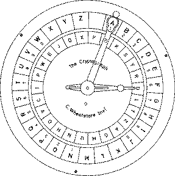

តើអ្វីជា Encryption?
Encryption (ការអ៊ិនគ្រីប) គឺជាដំណើរការបម្លែងព័ត៌មាន
ឬអត្ថបទធម្មតា (Plaintext) ទៅជាទម្រង់សម្ងាត់ (Ciphertext)
ដោយប្រើក្បួនគណិតវិទ្យា និងកូនសោសម្ងាត់ (Key) ដើម្បីការពារកុំឱ្យអ្នកគ្មានសិទ្ធិអាចអាន
ឬយល់បាន។ វាត្រូវបានប្រើយ៉ាងទូលំទូលាយក្នុងប្រទេសកម្ពុ
ជា ដូចជា ក្នុង Mobile Banking (ABA, ACLEDA, Wing),
Website ដែលមាន HTTPS, និងកម្មវិធីផ្ញើសារ ដើម្បីការពារព័ត៌មានផ្ទាល់ខ្លួន
និងទិន្នន័យហិរញ្ញវត្ថុពី Hacker។ របៀបដំណើរការរបស់វាគឺ ព័ត៌មានដើមត្រូវបានបញ្ចូលទៅក្នុងប្រព័ន្ធ
បន្ទាប់មកប្រព័ន្ធប្រើ Algorithm និង Key ដើម្បីបម្លែងវាទៅជាកូដសម្ងាត់ មុនផ្ញើតាមបណ្ដាញ
ហើយនៅពេលដល់អ្នកទទួល វានឹងត្រូវបានបកស្រាយត្រឡប់ទៅទម្រង់ដើមវិញដោយប្រើ Key ត្រឹមត្រូវ។
កំណើត Classical Encryption
Classical Encryption គឺជាវិធីសាស្ត្របុរាណសម្រាប់ការពារព័ត៌មាន
ដែលមានប្រភពមុនសម័យកុំព្យូទ័រ វាអនុវត្តដោយបម្លែងអត្ថបទធម្មតា (Plaintext)
ទៅជាសម្ងាត់ (Ciphertext) ដោយប្រើច្បាប់សាមញ្ញ និងសោសម្ងាត់ (Key)
ដូចជា Caesar Cipher, Substitution Cipher, និង Transposition Cipher។
វាអាស្រ័យលើការប្តូរអក្សរឬការរៀបចំលំដាប់អក្សរឡើងវិញ ដើម្បីឱ្យអ្នកគ្មានសិទ្ធិមិនអាចអានអត្ថបទបាន។
វិធីល្បីបំផុតគឺ Caesar Cipher ដែលស្តេច Julius Caesar ប្រើក្នុងចក្រភពរ៉ូម៉ាំង
ដោយផ្លាស់ទីអក្សរនីមួយៗទៅមុខតាមចំនួនជំហានថេរ (Key) ដូចជាអក្សរ A ប្រសិនបើ Key = 3
នឹងត្រូវបម្លែងទៅ D។ Classical Encryption មានសារៈសំខាន់ក្នុងការយល់ដឹងពីគោលការណ៍មូលដ្ឋាននៃ
Cryptography ហើយជាគន្លងសម្រាប់ការអភិវឌ្ឍវិធីសាស្ត្រអ៊ិនគ្រីបទំនើបនៅសម័យបច្ចុប្បន្ន។
ហេតុអ្វីបានជាយើងត្រូវដឹងពីវា?
យើងត្រូវរៀន Classical Encryption ព្រោះវាជាមូលដ្ឋានសំខាន់នៃ Cryptography
ទំនើប ដើម្បីយល់ពីគោលការណ៍មូលដ្ឋាននៃការការពារព័ត៌មាន ដូចជា របៀបបម្លែងទិន្នន័យឲ្យមិនអាចអានបាន
និងរបៀបប្រើ Key ដើម្បីគ្រប់គ្រងការចូលប្រើ។ ទោះបីជាវិធីសាស្ត្រទាំងនេះសាមញ្ញ
និងងាយត្រូវបំបែកនៅសម័យបច្ចុប្បន្ន ការសិក្សាវានាំឱ្យយើងយល់ពីចំណុចខ្សោយ និងគោលការណ៍នៃការអ៊ិនគ្រីប
ដែលសំខាន់សម្រាប់អ្នកដែលចង់រៀនវិស័យ Cybersecurity, ព័ត៌មានវិទ្យា ឬសន្តិសុខព័ត៌មាន។ លើសពីនេះ
Classical Encryption ក៏បង្ហាញពីប្រវត្តិសាស្ត្រនៃការការពារសារ និងការព័ត៌មានសំខាន់ៗ
ដោយបង្ហាញថាមនុស្សតែងតែស្វែងរកវិធីរក្សាសម្ងាត់សាររបស់ពួកគេ, ដែលផ្តល់បរិបទសំខាន់សម្រាប់ការរចនា
និងយល់ពីប្រព័ន្ធសុវត្ថិភាពទំនើប។
ការ Apply Cryptography Encryption
Cryptography (អ៊ិនគ្រីប) ត្រូវបានប្រើសម្រាប់ការការពារព័ត៌មាន និងធានាសុវត្ថិភាពទិន្នន័យនៅក្នុងសម័យឌីជីថល។
វាត្រូវបានអនុវត្តក្នុង Messaging Apps ដូចជា WhatsApp និង Telegram ដើម្បីធានាសារផ្ទាល់ខ្លួនមានសុវត្ថិភាព,
នៅក្នុង Mobile Banking និង Online Payment ដើម្បីការពារលេខកាត និង PIN, និងក្នុង Website និង Email
ដើម្បីធានាថាទិន្នន័យផ្ញើតាមអ៊ីនធឺណិតមានសុវត្ថិភាព។ វាត្រូវបានប្រើក្នុង Digital Signature និង Authentication
ដើម្បីធានាថាប្រតិបត្តិការនិងឯកសារមានភាពត្រឹមត្រូវ, នៅក្នុង Blockchain និង Cryptocurrency
ដើម្បីការពារប្រតិបត្តិការនិងទិន្នន័យឌីជីថល, និងក្នុង ស្ថាប័នរដ្ឋ, ក្រុមហ៊ុនឯកជន, IoT, និង Cloud Computing
ដើម្បីការពារទិន្នន័យសំខាន់ៗពី Hacker និងការចូលប្រើដោយមិនមានសិទ្ធិ។ Cryptography ជាវិធីសាស្ត្រមូលដ្ឋានសម្រាប់
Cybersecurity និងការរចនាប្រព័ន្ធសុវត្ថិភាពទំនើប, និងមានសារៈសំខាន់ក្នុងការពារព័ត៌មានផ្ទាល់ខ្លួន
និងប្រតិបត្តិការឌីជីថលនៅសម័យបច្ចុប្បន្ន។